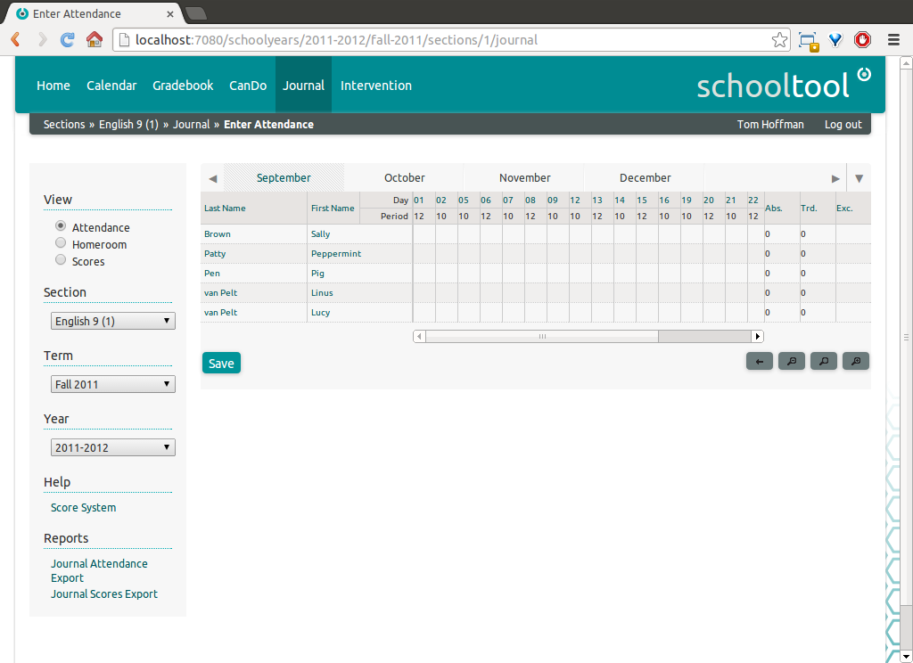
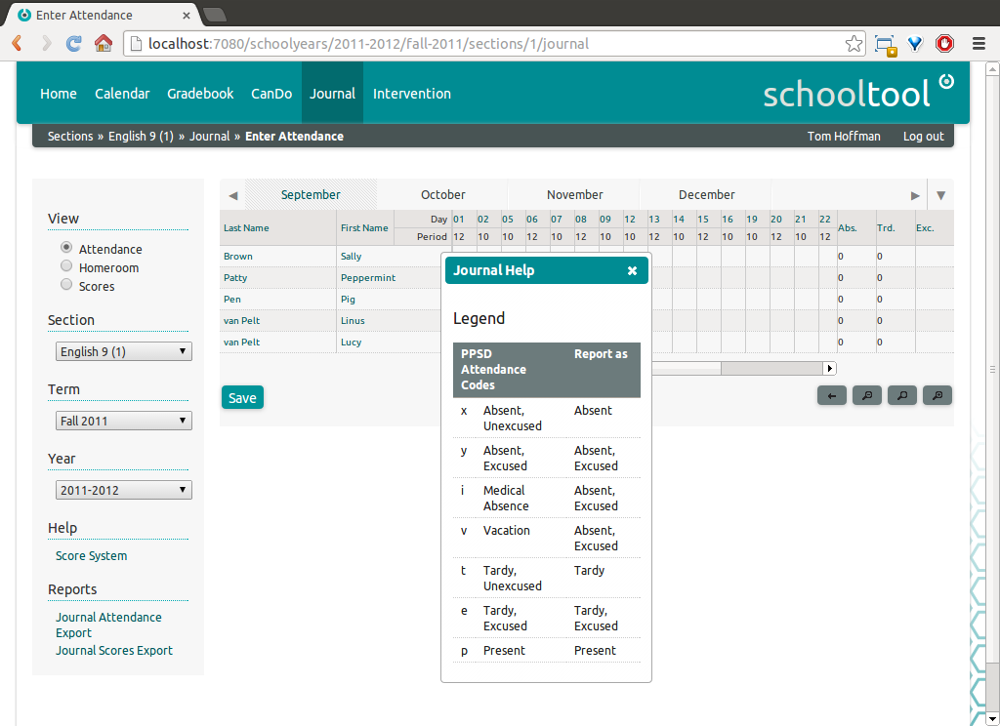
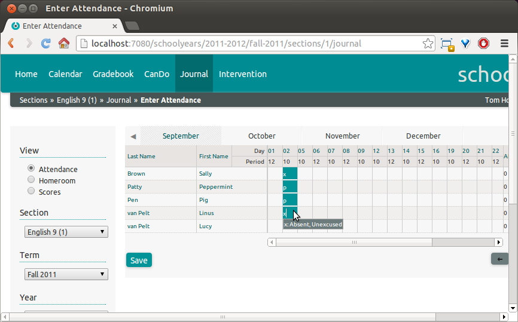
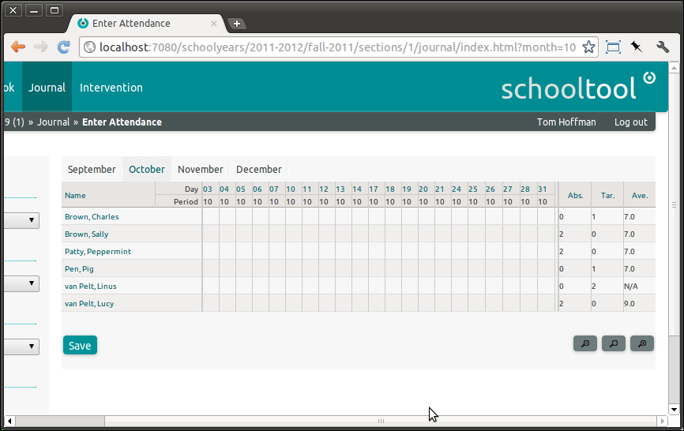
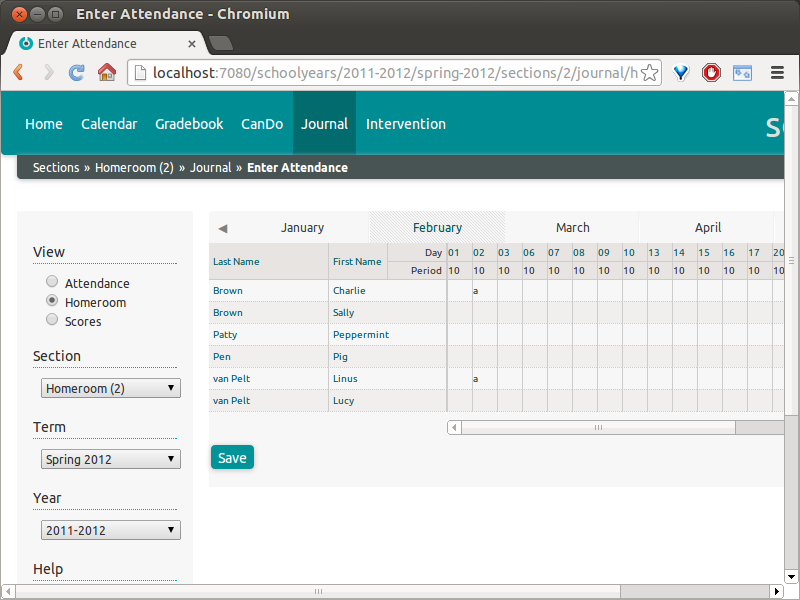
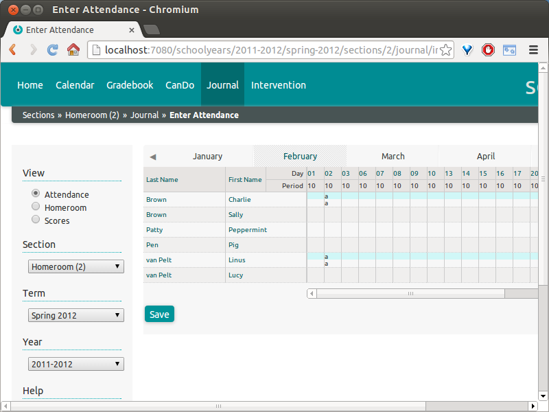
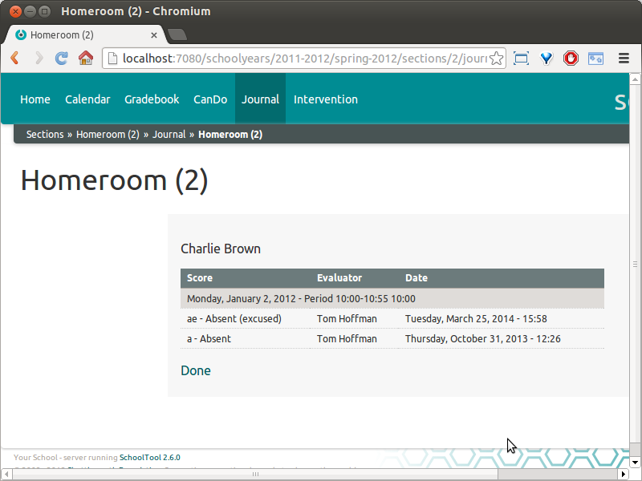
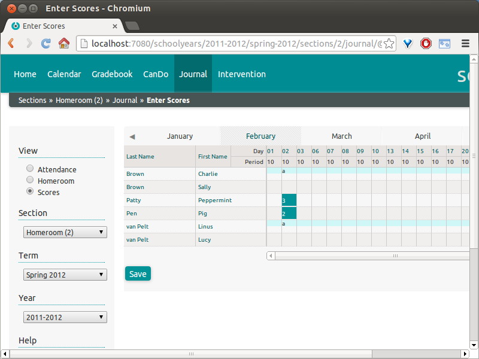

Entering Attendance and Scores in the Journal¶
With our new Score Systems for attendance and scoring set in the Journal, log back in as a teacher and navigate to the Journal.
Each tab represents a month in the term selected at left. Each column is a meeting of the section selected at left. This is affected by the Treat consecutive periods as one meeting setting in Creating Sections.

Entering Attendance Data¶
Note that Help: Score System will bring up a reminder of valid codes.

Click in the cell corresponding to the student/period in question and enter a code. If it is valid, the cell background will turn green and the full value and description should appear below the cell. If there are multiple valid scores starting with this letter, all valid choices will appear as a menu below.
If you click outside the cell, or click the value in the menu, the score will be entered in the cell. If you press the Enter key, the score will be entered and the cursor will move down to the next cell in the column. If you press the Tab key the value will be entered and the cursor will move right to the next cell in the row.
All entered values are unsaved until the Save button is pressed. Cells with the green background are unsaved.

The Absences column totals the student’s absences for the entire Term (not just the current month). For example, viewing the October tab carries across the September statistics from above.

The Average column provides the average of the numeric scores for the term. Note that if no score is entered for a given day, it is not included in the calculation. That is, an empty cell does not equal “0” when the average is calculated.
Homeroom Attendance¶
Homeroom attendance is used in systems where a student is marked as present/absent/tardy for the entire day, based primarily on their attendance a specific period. This is set up as part of Modeling Your School’s Timetable. This is commonly used in primary schools; many secondary schools and almost all post-secondary school do not use homeroom attendance.
Exactly how homeroom attendance should interact with section attendance the rest of the day involves somewhat complex and context-specific logic. To keep the system simple and transparent, homeroom attendance currently has no automatic effect on section attendance during the rest of the day. What does happen is that whenever homeroom attendance is recorded, each cell in the section attendance views is split to display the child’s homeroom attendance record for the relevant day above where the section attendance is entered.
That is, the teacher in each section is notified of the student’s status in homeroom, but the school may still want them to explicitly mark the absence in each section. The system does not automatically mark students who are absent in homeroom as absent for all the day’s sections.
For example, here I have set Charlie Brown and Linus as absent in homeroom for February 2:

Switching to the section view, I now see the split cell view. The “a” in the blue, upper part of the cells indicates that the student was marked absent in homeroom.
Note that even the section that is considered the homeroom period does not automatically apply the homeroom status to the section status. To confirm the absence for the section meeting, you must enter the status again in the lower half of the cell.

Excusing Absences and Tardies¶
If a teacher changes an unexcused absence or tardy to excused, it is recorded in the history, which can be viewed from the journal by clicking on the student’s name and selecting History. As you can see, the user changing the state and the date of the change is recorded.

Entering Scores in the Journal¶
Enter scores in the Journal by selecting the Scores view.
